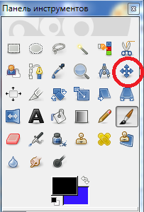

Движение слоев
Инструмент Перемещение позволяет двигать изображения на слоях в разные стороны.
Убедитесь, что на панели слоев выделен Новый слой, затем наведите курсор на последний созданный штрих (принадлежащий Новому слою), нажмите кнопку мыши и, не отпуская ее, переместите слой в сторону. В результате все штрихи, содержащиеся на Новом слое, будут перемещаться вместе с курсором. Таким образом мы передвинули один слой, не затрагивая другой, и изменили тем самым содержание изображения.
Параметры инструмента Перемещение
Здесь можно показать, что именно мы будем перемещать — Слой, Выделение или Контур. Выбрав первый вариант, мы будем двигать весь слой целиком. При выборе вариантов Выделение или Контур — только выделение или контур, если они есть на изображении.
Далее располагается опция Переключатель инструмента. Здесь можно выбрать один из следующих вариантов:
· Выбрать слой/направляющую позволяет перемещать тот слой, на штрих которого наведен инструмент. Если у вас несколько разных слоев, каждый из которых содержит какое-либо изображение, то перемещаться будет тот слой, на изображение которого наведен курсор ;
· Переместить активный слой — при выборе данного варианта перемещаться будет лишь один слой на панели Слои, независимо от того, на элемент какого слоя наведен курсор. В некоторых случаях данный режим будет удобнее, чем первый.
Таким образом, при движении слоев необходимо выделить нужный слой, а затем применить к нему инструмент Перемещение.